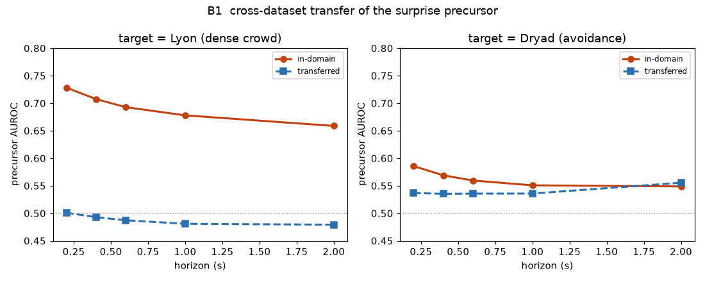

一方の群衆で学んだ"正常モデル"を、もう一方の群衆にそのまま当てる。前触れ性能が何に律速されるかを切り分ける。
| ホライズン | Lyon自前 | Dryad→Lyon | Dryad自前 | Lyon→Dryad |
|---|---|---|---|---|
| 0.2 s | 0.73 | 0.50 | 0.59 | 0.54 |
| 0.6 s | 0.69 | 0.49 | 0.56 | 0.54 |
| 2.0 s | 0.66 | 0.48 | 0.55 | 0.56 |

読み取れること：
・ターゲットがLyon（急機動）：自前は0.66–0.73と高いが、Dryad由来モデルはほぼ0.50（無力）。Dryadの正常モデルはそもそも前触れが弱いので運べない。
・ターゲットがDryad（日常回避）：自前0.55に対しLyon由来モデルも0.54とほぼ同等。＝Lyonの"正常群衆運動"モデルはDryadに下方互換で移植でき、自前と並ぶ。
・どちらを持ってきてもDryadの日常回避は0.5台までしか当てられない。
条件付き Normalizing Flow（zuko NSF）で自動生成。⑧Dryad × ⑨Lyon の横断実験。